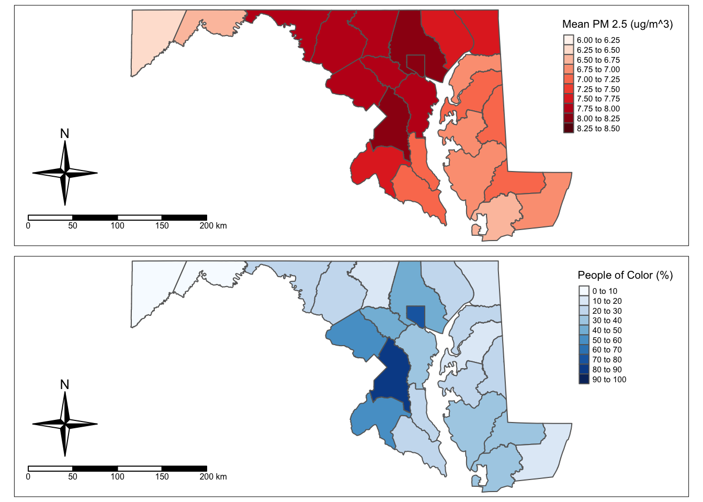

Code
# load packages
library(here)
library(tidyverse)
library(sf)
library(tmap)January 10, 2024
For this project, I will explore the spatial link between Particulate Matter (PM) 2.5 and race demographics in Maryland. According to the EJScreen technical documentation, the PM 2.5 indicator reported in this database gauges potential exposure to particles that are 2.5 micrometers or less. Specifically, the EJScreen database includes data for the annual average concentration in the air, measured in micrograms per cubic meter, at designated locations across the United States.
Understanding PM 2.5 concentration is important because this air pollutant has major effects on human health and the environment. Many of these harmful effects are detailed on the EPA website, which is cited in the EJScreen technical documentation. For example, there are serious health effects to the human heart and lungs that can directly result from the inhalation of PM 2.5. In terms of environmental effects, PM 2.5 can be carried long distances by the wind and settle on ground or water, negatively impacting the chemical composition of important ecosystems.
Moreover, the EPA website provides information on major sources of PM 2.5 in the environment. Most PM 2.5 is not emitted directly from a source but instead is formed in the atmosphere following reactions between other pollutants like sulfur dioxide and nitrogen oxides, which are commonly emitted by automobiles, power plants, and industrial processes. Sources of PM 2.5 that are directly emitted into the air generally come from sources such as construction sites, unpaved roads, smokestacks, and fires.
I chose to investigate the spatial link between PM 2.5 and race demographics in my home State of Maryland because I think it has the potential to highlight an example of the environmental disparities faced by people of color. I’ve heard that Prince George’s County, home to my alma mater the University of Maryland, has a great deal of air pollution as a result of being directly downwind of Washington DC. I also know from living in the DC area for over 10 years that this county has many more people of color compared to neighboring Montgomery County, which lies northwest (and thus upwind) of DC. I’m very curious to see whether if there is an environmental justice issue here to highlight and how pronounced this issue might be.
Reading layer `EJSCREEN_StatePctiles_with_AS_CNMI_GU_VI' from data source
`/Users/linusghanadan/Documents/MEDS/other/linusghanadan.github.io/data/2024-1-10-post-data/EJSCREEN_2023_BG_StatePct_with_AS_CNMI_GU_VI.gdb'
using driver `OpenFileGDB'
Simple feature collection with 243021 features and 223 fields
Geometry type: MULTIPOLYGON
Dimension: XY
Bounding box: xmin: -19951910 ymin: -1617130 xmax: 16259830 ymax: 11554350
Projected CRS: WGS 84 / Pseudo-Mercator# Find the average values for all variables within counties
maryland_counties <- aggregate(ejscreen, by = list(ejscreen$CNTY_NAME), FUN = mean) %>%
mutate("People of Color (%)" = PEOPCOLORPCT * 100, # Change variable names for plotting
"Mean PM 2.5 (ug/m^3)" = PM25)
# Filter for PG County
pg_county <- ejscreen %>%
filter(CNTY_NAME == "Prince George's County") %>%
mutate("People of Color (%)" = PEOPCOLORPCT * 100, # Change variable names for plotting
"Mean PM 2.5 (ug/m^3)" = PM25)# Create PM map of Maryland
pm_map <- tm_shape(maryland_counties) +
tm_polygons(col = "Mean PM 2.5 (ug/m^3)", palette = "Reds",
breaks = seq(from=6.0, to=8.5, by=0.25)) +
tm_compass(type = "4star", position = c("left", "bottom")) +
tm_scale_bar(position = c("left", "bottom")) +
tm_layout(legend.position = c("right", "top")) +
tm_layout(legend.height = 0.5)
# Create demographics map of Maryland
demographic_map <- tm_shape(maryland_counties) +
tm_polygons(col = "People of Color (%)", palette = "Blues",
breaks = seq(from=0, to=100, by=10)) +
tm_compass(type = "4star", position = c("left", "bottom")) +
tm_scale_bar(position = c("left", "bottom")) +
tm_layout(legend.position = c("right", "top")) +
tm_layout(legend.height = 0.5)
# Stack the maps
tmap_arrange(pm_map, demographic_map, nrow=2)
# Create PM map of PG county
pm_map <- tm_shape(pg_county) +
tm_fill(col = "Mean PM 2.5 (ug/m^3)", palette = "Reds",
breaks = seq(from=7.0, to=8.5, by=0.1)) +
tm_scale_bar(position = c("right", "top")) +
tm_compass(type = "4star", position = c("right", "bottom")) +
tm_layout(legend.position = c("left", "center"))
# Create demographics map of PG county
demographic_map <- tm_shape(pg_county) +
tm_fill(col = "People of Color (%)", palette = "Blues",
breaks = seq(from=0, to=100, by=5)) +
tm_scale_bar(position = c("right", "top")) +
tm_compass(type = "4star", position = c("right", "bottom")) +
tm_layout(legend.position = c("left", "center"))
# Stack the maps
tmap_arrange(pm_map, demographic_map, nrow=2)@online{ghanadan2024,
author = {Ghanadan, Linus},
title = {Visualizing {PM} 2.5 Concentrations in {Maryland} Alongside
Race Demographic Data},
date = {2024-01-10},
url = {https://linusghanadan.github.io/blog/2024-1-10-post/},
langid = {en}
}